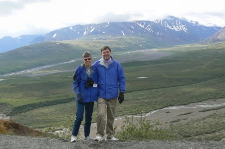
25 December 2005 Despite not having a christmas tree for only the second time, we performed the rest of our holiday ritual. After opening our presents, we went to Bethune beach to walk and look for birds. It was much warmer than usual, and we saw 14 species, including Northern gannets and an eagle. Erich's favorite present: a lollypop that lights up and projects a picture of Santa! (Margie wishes she had known this before the shopping started.)
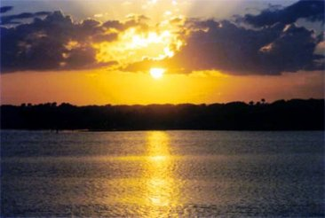
9 February Erich celebrated his 25th anniversary of knowing his friend Barbara. The same day, Erich got a new office computer, an imac G5. The computer staff took forever to prepare it, and left so many things off that Erich essentially prepared the thing himself. Compensation: it has a built-in camera.
10 February A great day! In the morning we went to the Lyonia Nature Preserve behind the Deltona Library. Our target species was the Florida Scrub Jay, a new bird for both of us. After some tantalizing flashes of blue, we finally got a good look at one scrabbling in the bushes. Then Margie spotted one showing off in a tree close by. This one really wanted to be seen, however. As Margie lowered her binoculars, she found a bird flying directly at her face. And a moment later, it was perched on her hat! Where was the camera?? Later that evening we went to the Stetson season opener baseball game, where Stetson squeaked by Southeastern Louisiana 2-1. The Teacher Creatures had fun catching up after the 9-month-long Season-Without-Baseball.
| 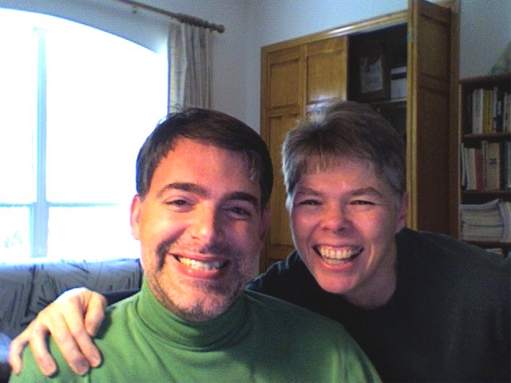 | 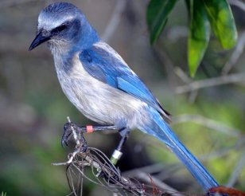 | |
22 February We received our last holiday card, but one of the best (designed by the kids), from the Hestevolds.
28 February Missy let us help with her manatee research. We got to hold the canoe steady while she took pictures with the underwater camera. We saw evil catfish trying to attach to the manatees, and our heroes doing barrel rolls to get them off. A lizard came out of a hollow branch in the middle of the run to say hello. No clue how he got out there. For lunch we had a new experience: Indian Flavours, a wedding cake shop with Indian dishes for lunch. Yum! Later that evening, Mike, who teaches astronomy, gave us a tour of the heavens with his 8 inch telescope. We saw Saturn and its rings, Sirius, the Orion nubula, Cassiopeia, Mars, the Pleiades, and a thousand other points of light.
| 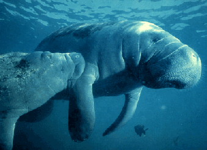 | 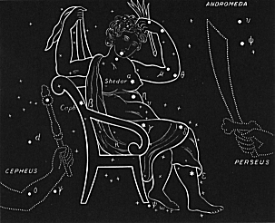 | |
1 March First time for Sonic Drive-In. Last time.
4 March Erich finally threw away his favorite blue jeans. The Brotherhood of the Unraveling Pants disintegrated.
8 March Erich finally finishes his Christmas candy.
12-15 March Erich's friend Barbara visited from Albuquerque. We went to the beach, the local wildlife refuge to look at birds, drank margaritas, talked, did foot rubs, made breakfast buritos, went to the mall (where she bought 3 bathing suits), visited Cassadaga (Florida's oldest spiritualist town, 5 minutes from our house), went to a baseball game, went to Michele and Guen's house for their full moon bonfire, had brunch at the Sugar Mill Restaurant, tried and failed to see manatees at Blue Spring State Park, visited Honda when Erich's car overheated (the repair bill was more than the damn car was worth), saw a movie at the dinner theater in Orlando, and hit a bookstore.
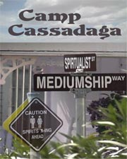
20 March Erich and Margie are curious whether the release latches inside their car trunks are glow-in-the-dark, so they climb in to see.
26 March Erich gets word that his extensive web pages will be featured for two minutes on a British television program called "World Wide Weird".
2 April Driving to a baseball game, we saw a gopher tortoise just moseying down the sidewalk. We won the game, swept Vermont in the 3-game series. Margie won baseball bingo and got 16 wings as a prize.
3 April We celebrated Margie's birthday early at the Melting Pot. Fondue was fun but expensive.
5 April After hearing rustling in the leaves, we opened our front door to find an armadillo. First one seen in our yard.
| 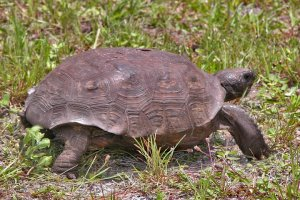 | 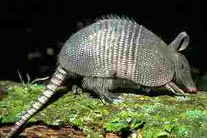 |
14 April Sabbatical has its perks: we drove to Jacksonville for Stetson's baseball series against JU. We chose a hotel based on price, location, and amenities; not disclosed on their web site was the fact that the baseball team was also staying there. We had dinner at a nice hole-in-the-wall Thai restaurant (thanks, Jimmy). Friday's game was ugly, we lost 2-3. Saturday was a double-header. We met the family of one of the pitchers. It was so hot and we were playing so poorly that we left. Of course, the last game was the only one that Stetson won!
17 April Margie's mom died after a long illness. Not a happy occasion, but she was ready, and it put us in touch with Margie's cousins after many years.
22 April Coming back from the funeral, we passed a bright yellow and green school bus. The back door was open, and a camel was poking out his head, grinning at us. It turned out to be "Sir Gus," a Central Florida Shriner mascot.
| 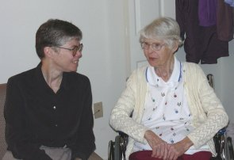 | 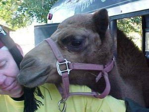 |
30 April Erich celebrated his birthday. He gobbled down duck with cherry sauce at a favorite restaurant, we cheered the Hatters, and heard some live music. At the baseball game, a killer red-tailed hawk descended from the skies, holding his dinner in his claws. The players politely waited for him to fly through. The day was fun, but definitely less frightening than the previous birthday.
4 May Margie got a new computer, her first personally owned for home use. No major problems, and she likes it a lot.
11 – 13 May Margie attended her second Legacy of R. L. Moore Conference in Austin. On the only free evening, she went downtown for some music. By a serendipitous coincidence, her current favorite singer/songwriter Jimmy Lafave, was playing. Wonderful show!! The conference was also enjoyable, and she came back really inspired. In the fall, two of her classes were run by the students. Way to get out of lecturing!
27 May Against all odds, the Stetson baseball team won the A-Sun conference tournament for the second year in a row. Going in third seed, we won four straight games, and headed off to the regionals in Atlanta. Where we were soundly trounced, first by Georgia Tech, then by Michigan. And then we went into baseball hibernation.
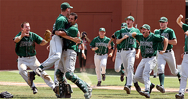
4 June Our friends Rob and Lucy took us boating on the St. John's River. It was to be a nice little trip around the canals looking for birds, followed by a Sunday brunch buffet. We made it all the way up to Lake Woodruff. Lucy, the budding birder, recorded 21 bird species, plus a number of alligators. And then, BUMP! We hit something in shallow water, and two of three propellor blades snapped off. We idled back about three miles to the nearest dock, borrowed a propellor from Lucy's Ex (!) and Rob had it fixed in no time. Thanks to this detour and the change of schedule, we got to see more critters. We missed the buffet, but had a delicious lunch at the Wharf. A very successful morning.
| 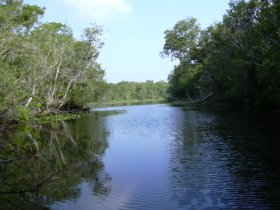 | 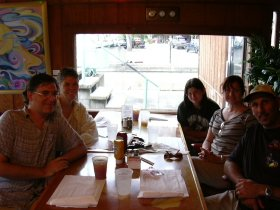 |
17 June Five of Erich's puzzles are used in the U.S. Puzzle Championship. If you want to try your hand at them, they are here.
19 June – 2 July We took an extended vacation to the northwest part of the country. Kendyl and Mark were delightful hosts, putting us up for 3 days and showing us some fun parts of Seattle. Then we took a Cruise West tour of Alaska, 5 nights on land and 4 at sea. Highlights included lots of wildlife, both in Denali and Glacier Bay, watching glaciers calve, and an exciting white-water rafting trip. Please see our travelogue. We definitely recommend the small boat experience.
| 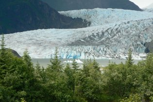 | 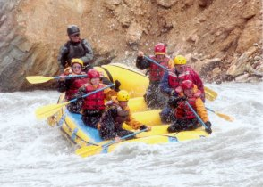 |
9 July To keep up with the Hales, Erich bought his own home computer, an exact copy of his office iMac.
20 July On the way to the movies, we had a flat tire; Road Ranger to the rescue. Erich won $25 at poker, his maximum winning to date.
22 July We celebrated our 19th anniversary with a relaxed day at home and Indian food. Yum!
28 July We took a day trip to Busch Gardens with Barbara and her friend Eric. We saw African animals from a scenic train ride, walked through two aviaries, saw some African dance while we waited for the rain to stop, did the rafting ride, and browsed the gift shops. Oh, did we mention the roller coasters? We enjoyed Gwazi (the southeast's largest and fastest double wooden coaster), SheiKra (the only coaster in the country with a 200 foot vertical drop), Kumba (with three seconds of weightlessness in one of the world's largest vertical loops), and Montu (an inverted coaster with four gee turns). We came home bruised and exhausted, but happy.
| 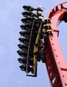 | 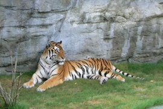 |
19 August Sam, one of our favorite singer/guitar players, came to Caffe da Vinci. We really enjoyed the first 20 minutes – he even sang a great Townes Van Zant song. Then he let a friend take the stage, which turned out to be the worst music we ever paid to hear. Get a clue, Sam!
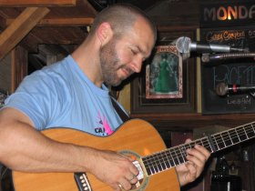
20 August A few hungry souls accepted our invitation for a pot luck dinner to celebrate (?) the end of our sabbaticals and return to full time teaching. We were especially happy to see Guy and Lauri, who came all the way from Orlando.
23 August We reluctantly returned to our j-o-b-s. (And, yes, that is a 4-letter word.)
15 September We finished watching the TV Serial Six Feet Under (what a great last episode!) and began watching reruns of Scrubs, which we recently finished. During the year, Erich finally finished watching all 180 episodes of Law & Order SVU and is making progress on the 410 episodes of the original Law & Order.
21 September We played hooky today and went to St. Augustine. We visited the lighthouse – climbed to the very top! We played and reviewed three minigolf courses, and had a great lunch at the Columbia Restaurant.
| 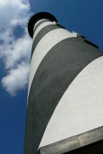 | 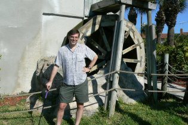 |
15 October For the second year we went to a corn maze . We spent a little over two hours getting lost and collecting clues to puzzles and historical trivia. The only negative was getting reprimanded by the Malicious Maze Master for not carrying our emergency flag.
| 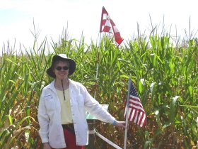 |
21 October A special treat this year: baseball in October! The Canadian Junior National Team, still somewhat frozen, gave Stetson some practice. We trounced them 13-0, despite a steal attempt at second base ... with bases loaded!
28 October More baseball, as the current Stetson squad took on the Stetson Baseball Alumni. The young'uns won 3-1 in five innings. That night we attended the annual Halloween Party at Michele & Guen's. The costumes were extra great this year, so check out the Halloween Web Page.
| 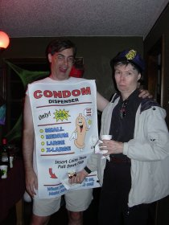 | 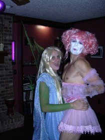 |
11 November We attended the annual Je Ne Sais Quoi, the department fall picnic. Faculty, students, alums, and friends get together at DeLeon Springs State Park and have brunch at the Old Spanish Sugar Mill Restaurant. The main feature is cooking your own pancakes right on the table. We enjoyed relaxed conversation and good food. Some of our students agreed to pose for a picture.
14 November Kurt, Erich's only sibling, turned 40 today.
| 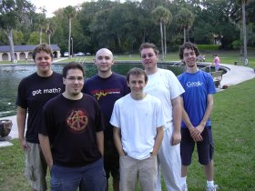 | 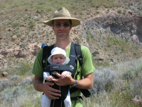 |
22 November Erich did two things he hadn't done since high school: do a headstand (in class) and get high.
23 November We celebrated Thanksgiving at Barbara's house, as we often do. She provided the traditional turkey and a delicious UPD (unidentified pumpkin dessert), while Missy contributed many of the other fixings. We managed to put together a vegetable dish and brought a bottle of wine. Later, Isaac joined us for some games.
26 November We drove down to Patrick Air Force Base near Cocoa Beach to do some shelling. The weather was beautiful, which means the shells were not bountiful. We hit a mini-golf course and saw the new Nightmare Before Christmas 3D.
18 December Margie finally finished her book and delivered it to the book store to be copied for her spring class. We joined David and Ross and another couple for lunch. It was good to see them again. In the evening we had pizza and played koi-koi with Barbara.
We're looking forward to joining Michele, Guen and other friends to comemorate the Solstice, celebrating our 20th Christmas together, with or without a tree, spending the day on the beach, and hosting our annual New Year's Eve party.